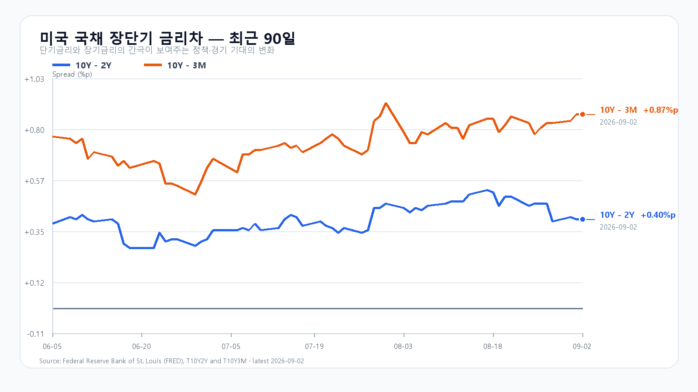
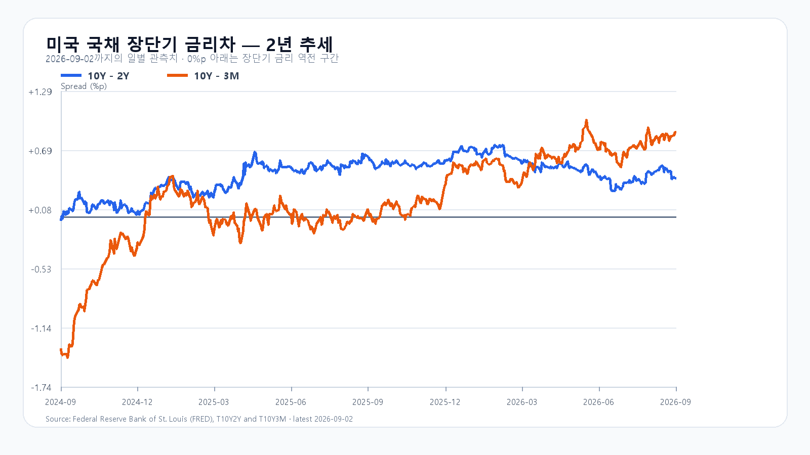

KOSPI 6,700 회복에는 외국인·프로그램 매수가 필요하다
Nvidia·Micron 반등과 원화 강세가 오늘 한국 증시의 회복을 받친다. 다만 Broadcom의 실적 기대 부담과 배럴당 95달러대 유가, 미국 10년물 4.79%는 상승 폭을 제한한다. KOSPI 6,700을 넘는 반등에는 외국인 현물과 프로그램의 동반 매수가 필요하다.
전일 KOSPI는 6,625.47에 출발해 6,558.30까지 밀린 뒤 6,562.72로 마감했다. 6,694.57까지의 장중 반등은 있었지만 종가는 저가권에 가까웠다. KODEX 레버리지도 100,995원에서 98,885원까지 내려 98,900원으로 끝났다. KOSPI 일봉과 KODEX 일봉이 보여주는 것은 반등 시도보다 먼저 확인해야 할 하단이다.
장후 누적 현물에서 개인은 2조3,029억원 순매수, 외국인은 1조9,173억원 순매도, 기관은 2조361억원 순매도였다. 프로그램 전체도 1조5,140억원 순매도였다. 현물은 18시 6분, 프로그램은 18시 5분의 장후 누적값이다. 외국인과 기관의 매도 물량을 개인·기타법인이 받아낸 만큼 오늘은 매도 주체의 변화가 필요하다. 투자자별 거래동향 · 프로그램 거래동향
삼성전자는 25만500원으로 4.02%, SK하이닉스는 161만3,000원으로 4.73% 하락했다. 지수의 회복은 이 두 종목의 낙폭 축소가 뒷받침할 수 있지만, 전일 하락폭이 컸다는 사실만으로 다음 날의 상승 폭을 정할 수는 없다. KOSDAQ도 803.98로 2.10% 내렸다. 전날 낙폭을 되돌리는 동안 외국인과 기관의 매도가 줄어드는지 봐야 한다.
장전 가격
삼성전자 NXT 254,000원(1.40%), SK하이닉스 1,641,000원(1.74%) · 08:19:06 KST. 달러/원 1,360.30원(-1.11%, 07:32:31 KST 고시). Nasdaq100 선물 29,182.25 (08:08:57 KST), S&P500 선물 7,677.00 (08:09:04 KST). Broadcom 시간외 $361.82(-1.48%, 08:19:05 KST).
미국 선물은 지연 호가이며 NXT 가격은 정규장 시초가와 다를 수 있다. NXT · 환율 · 미국 선물 · Broadcom
미국 반도체 반등 속 Broadcom 실적 기대는 엇갈렸다
9월 2일 미국 정규장에서는 Nvidia와 Micron이 각각 3.21%, 2.43% 올라 반도체 위험선호를 되살렸다. SOXX와 SMH도 상승 마감했다. 다만 AMD와 Broadcom은 약세였고, Broadcom은 실적 발표 뒤 시간외 움직임이 기대치 부담을 보여줬다. 장전 국내 반도체주도 상승하고 있어 정규장 시초가에는 우호적이다.
| 종목 | 종가 | 등락률 | 종목 | 종가 | 등락률 |
|---|---|---|---|---|---|
| QQQ | $709.24 | +0.23% | TQQQ | $69.60 | +0.65% |
| SOXX | $501.44 | +0.23% | SMH | $550.48 | +0.96% |
| Nvidia | $224.41 | +3.21% | AMD | $457.06 | -0.55% |
| Micron | $956.08 | +2.43% | Broadcom | $367.24 | -0.66% |
가격은 Yahoo Finance 일봉 데이터 기준이다. Broadcom의 3분기 매출은 295억9,100만달러, AI 매출은 167억달러였고 4분기 매출 가이던스는 348억달러다. LSEG 집계 예상 350.3억달러에는 못 미쳤다. AI 수요 증가와 투자자의 높은 기대치가 부딪혔다. Broadcom 실적 발표 · 컨센서스 비교
Broadcom의 4분기 AI 매출 가이던스는 217억달러로 전년 동기 대비 236% 증가다. 수요가 무너졌다는 숫자는 아니다. 반대로 높은 성장률이 이미 가격에 반영된 종목에서는 성장의 절대치와 기대를 넘는 정도가 서로 다른 문제다. 국내 메모리주도 실적 증가율과 주가에 반영된 기대를 함께 봐야 한다.
메모리 가격은 버팀목이지만 거래 회복을 뜻하지는 않는다
9월 2일 19시 10분 KST 기준 DDR5 16Gb 현물은 54.250달러로 0.31%, DDR4 16Gb는 92.649달러로 0.68%, DDR4 8Gb는 44.571달러로 0.06% 올랐다. 공급자의 높은 호가가 가격을 지지하고 있다는 신호다. TrendForce 현물 가격
다만 HBM·서버 DRAM·eSSD의 AI 수요와 소비자용 DDR·NAND 현물 거래를 한 줄로 읽으면 안 된다. 이번 현물 상승은 가격의 하방을 받치는 근거이지 거래량이 되살아났다는 증거는 아니다. TrendForce 시장 해설처럼 수요의 약함과 공급자 호가의 견조함은 함께 존재한다. 따라서 삼성전자와 SK하이닉스의 반등은 현물 가격 한 항목보다 NXT 이후 정규장 매수의 지속성으로 판정해야 한다.
AI 인프라 수요의 보조 지표로는 HPE의 3분기 매출 122억달러와 Cloud & AI 매출 90억달러가 있다. 각각 전년 동기 대비 34%, 25.4% 늘어 서버 투자 수요를 뒷받침한다. HPE 실적 발표
유가와 장기금리는 반등의 속도를 제한한다
브렌트유는 배럴당 95.63달러로 1.0%, WTI는 91.01달러로 0.9% 올랐다. 전날 한국장 급락에는 이미 중동 교전과 유가 급등이 반영됐다. 밤사이 추가 상승은 그 뒤에 더해진 부담이다. 국제유가 일일 보고서 · EIA 주간 석유 지표
미국 국채 3개월물은 3.92%, 2년물은 4.39%, 10년물은 4.79%였다. 10년-2년 금리차는 +0.40%포인트, 10년-3개월물 금리차는 +0.87%포인트다. 장기 금리가 이 수준에 머무르면 성장주와 고평가 반도체에는 실적 개선만큼 할인율도 중요해진다. 미 재무부 수익률 곡선
유가 상승은 수입 비용과 기대 인플레이션을 통해 금리 부담을 오래 남길 수 있다. 반도체 회복이 유가·금리의 동시 압력을 넘으려면, 해외 가격 반등이 원화와 국내 매수로 이어져야 한다. 그래서 선물이나 시간외 한 번의 상승보다 종가에서 남은 수급이 더 중요하다.


6,500 방어와 6,700 회복을 가르는 조건
장중 변동 경로는 6,200~7,000으로 열어 둔다. 판단의 우선순위는 장중 고점보다 종가 구간이다. 6,500 지지와 6,700 회복이 기본 경계이며, KODEX 레버리지는 9만7,000원 지지, 10만2,000원 반등, 10만6,000원 저항을 순서대로 본다.
시나리오 확률은 조건부 판단이다. 경계값 6,500과 6,700은 기본 구간에 포함한다. 장중 예상 범위 6,200~7,000의 명목 포괄 수준은 90%이며 보장 범위는 아니다. 대응 점수는 공격 25 · 관망 50 · 방어 25다. 개장 30분·60분과 14시에 가격·수급을 다시 비교한다.
KOSPI 6,500~6,700
- 원화 강세가 유지된다.
- NXT 회복이 현물 장 초반까지 이어진다.
- 외국인·프로그램 매도가 줄어든다.
무효화: 종가가 6,500 아래로 내려가고 두 수급이 매도로 확대될 때.
KOSPI 6,700~6,950
- 6,700 위에서 종가를 형성한다.
- 반도체 대형주가 NXT 회복을 지킨다.
- 외국인 현물과 프로그램이 함께 개선된다.
무효화: Broadcom 기대 부담이 재차 확산하며 6,700을 종가 기준으로 잃을 때.
KOSPI 6,250~6,500
- 유가 95달러대 부담이 이어진다.
- 10년물 4.79%가 위험선호를 누른다.
- NXT 회복이 정규장 매도로 꺾인다.
무효화: 외국인·프로그램이 동반 개선되고 6,500 위 종가를 회복할 때.
오늘 밤에는 서비스 수요와 고용이 금리의 다음 방향을 가른다
오늘 21시 30분 KST(08:30 ET)에 미국 신규 실업수당·생산성 및 단위노동비용 수정치·무역수지, 23시(10:00 ET)에 ISM 서비스업지수가 나온다. 내일 9월 4일 21시 30분에는 8월 고용보고서가 발표된다. 유가와 장기금리가 높은 자리에서는 수치 하나보다 서비스 수요와 고용이 함께 가리키는 물가 압력이 더 중요하다. 뉴욕 연은 경제일정 · 미 노동통계국 발표일정